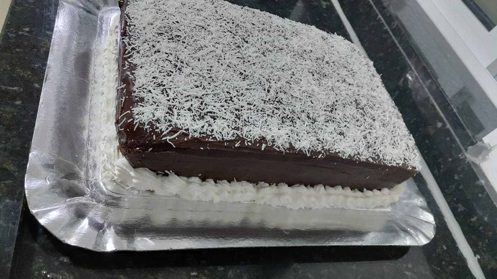
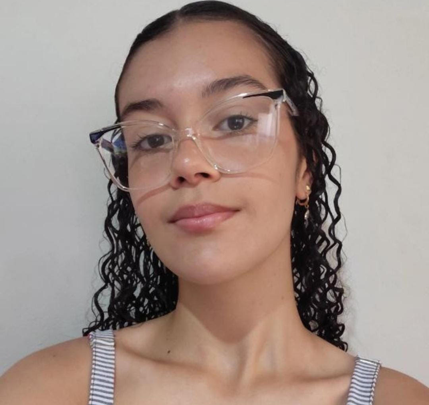
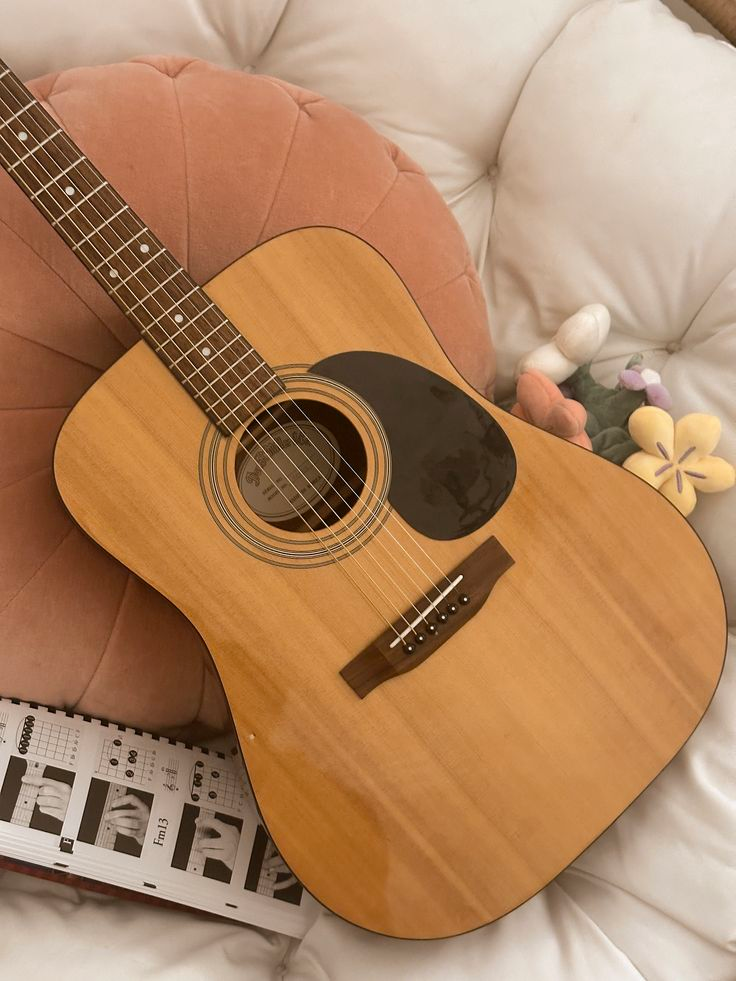
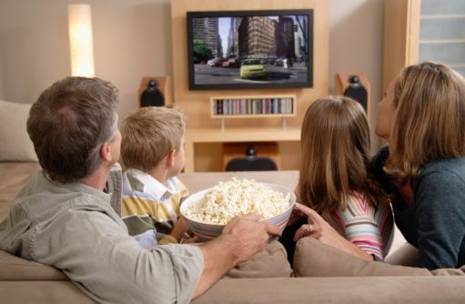
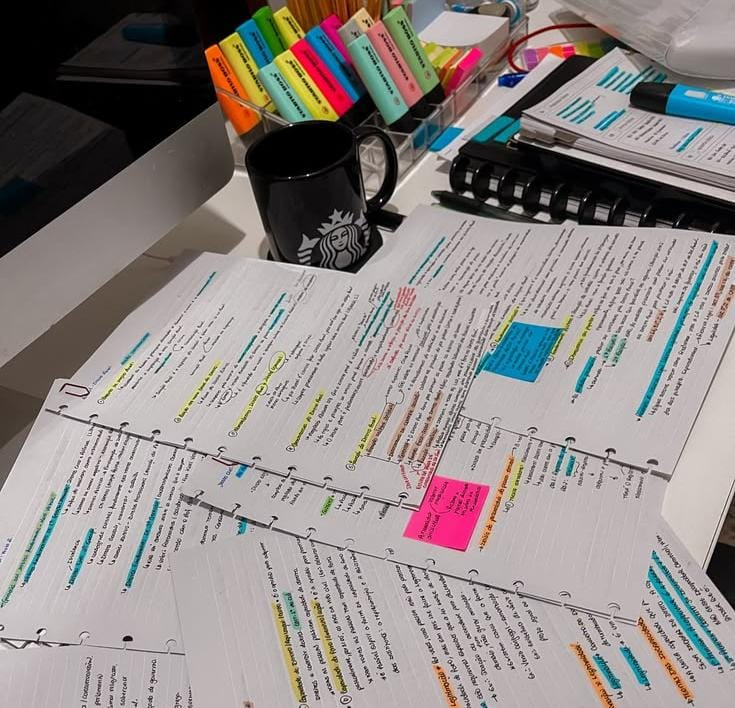
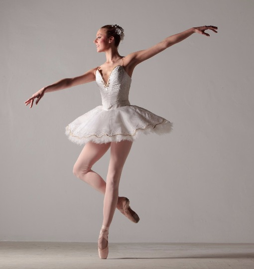
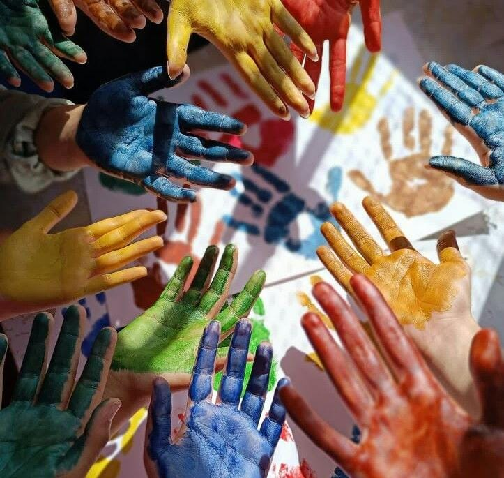
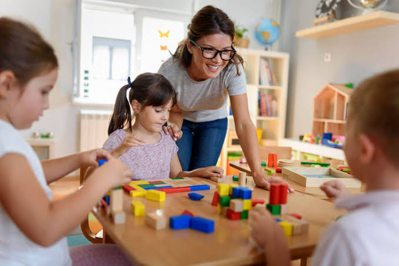

Cozinhar doces (principalmente bolos) e salgados

Oi! Meu nome é Gabriela de Moura, tenho 17 anos e sou estudante do curso de Desenvolvimento de Sistemas no SENAI. Atualmente, estou no último semestre do curso e também concluindo o Ensino Médio.
Sou uma pessoa muito dedicada aos estudos. Minha matéria favorita é Biologia, mas também gosto muito da área de tecnologia. Tenho conhecimentos em Python, HTML, CSS, JavaScript, PHP e Dart, linguagens que me permitem criar projetos e colocar ideias em prática.
Me considero uma pessoa simpática, gentil e feliz. Sou católica, gosto de conhecer pessoas, fazer novas amizades e viver novas experiências.
Este blog foi criado para compartilhar um pouco da minha trajetória, dos meus interesses, dos projetos que desenvolvo e de momentos que fazem parte da minha jornada.

Cozinhar doces (principalmente bolos) e salgados

Tocar violão
Gosto de ler para relaxar

Assistir filmes com a minha família

Eu gosto de estudar, é algo que faz parte de mim

Faço aulas balé

Sou catequista, eu amo estar com as crianças

Com o fim do curso técnico e do Ensino Médio, pretendo entrar na faculdade de Pedagogia para seguir carreira na área da educação. Desde pequena, sonho em ser professora e acredito que essa é a profissão com a qual mais me identifico. Estou muito animada e cheia de expectativas para essa nova etapa da minha vida. Após concluir a graduação, pretendo me especializar em Neuropsicopedagogia.